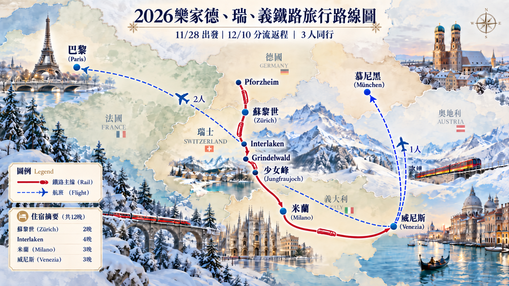

行程地圖

德國出發
Pforzheim
11/28 上午啟程
11/28 上午啟程
瑞士重點
Zürich 2 晚
Interlaken 4 晚
少女峰安排彈性日
Interlaken 4 晚
少女峰安排彈性日
義大利段
Milano 3 晚
Venezia 3 晚
以高鐵與鐵路為主
Venezia 3 晚
以高鐵與鐵路為主
12/10 分流
✈ Paris ×2
✈ München ×1
✈ München ×1
住宿與移動總覽
| 日期 | 城市 | 住宿 | 主要交通 |
|---|---|---|---|
| 11/28–11/30 | Zürich | 2 晚 | Pforzheim → Zürich |
| 11/30–12/4 | Interlaken | 4 晚 | Zürich → Interlaken Ost |
| 12/4–12/7 | Milano | 3 晚 | Interlaken → Milano Centrale |
| 12/7–12/10 | Venezia | 3 晚 | Milano → Venezia Santa Lucia |
| 12/10 | Paris / München | 分流 | VCE → Paris；VCE → München |
住宿策略
Zürich：靠近 Zürich HB
Interlaken：靠近 Interlaken Ost
Milano：靠近 Centrale
Venezia：Santa Lucia / Cannaregio
建議優先採 1 間 Twin/Double + 1 間 Single；Milano、Venezia 可再比較 Triple room 與兩間房價差。
交通策略
德國段 DB 單買；瑞士段重點比較 Swiss Half Fare Card；Milano → Venezia 優先 Frecciarossa / Italo；最後一天由威尼斯機場分流搭機。
提醒：少女峰不要太早綁定日期。以 12/1 與 12/3 作為主要候選日，11/30 抵達 Interlaken 後再依山頂天氣與 webcam 決定。